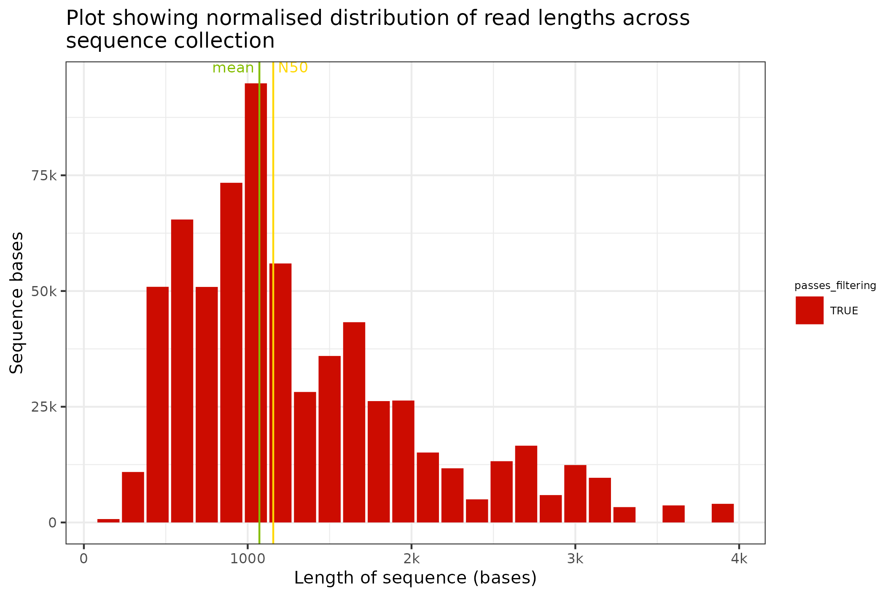
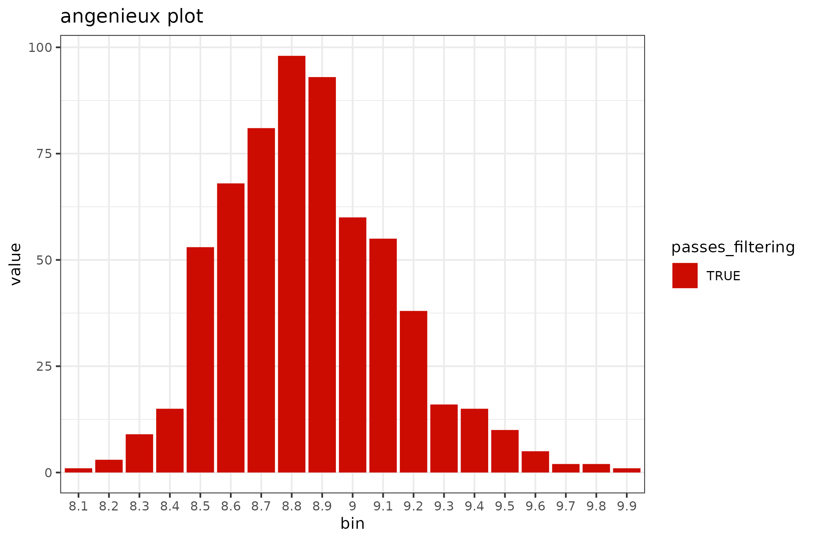

fastq_files.RmdThis fastq_processing vignette re-introduces some of the content from the BasicQC tutorial concept but derives the primary information from the FASTQ file for users who have not maintained their sequencing_summary file. This is intended to facilitate the development of workflows and reports that are decoupled from the requirement for the sequencing_summary file.
The floundeR package is distributed with a collection of canned datasets. These include an example FASTQ file that has been gzip compressed and contains a somewhat lacklustre historical dataset that is interesting only in its compactness.
library(floundeR)
#> floundeR v0.0.4
canonical_fastq <- flnDr("example.fastq.gz")
fastq <- Fastq$new(canonical_fastq)
#> → opening fastq stream
print(fastq)
#> <floundeR::Fastq>
fastq$as_tibble()
#> # A tibble: 625 x 3
#> sequence_length_template mean_qscore_template passes_filtering
#> <int> <dbl> <lgl>
#> 1 481 8.58 TRUE
#> 2 700 8.94 TRUE
#> 3 722 8.71 TRUE
#> 4 402 8.68 TRUE
#> 5 840 8.77 TRUE
#> 6 351 8.55 TRUE
#> 7 780 9.18 TRUE
#> 8 784 9.07 TRUE
#> 9 803 8.67 TRUE
#> 10 769 8.46 TRUE
#> # … with 615 more rowsSo what have we done here? We have identified the packaged fastq file and we have used this file to instantiate the Fastq object - this can be displayed using the print() command and we can have a quick look at the data that has been extracted using the $as_tibble() function that is exported by the package.
fastq %>% to_sequencing_set()
#> <floundeR::SequencingSet>The SequencingSet in turn has a collection of methods that can be used to structure and visualise the data. The first that we’ll have a look at is the $enumerate method that returns an Angenieux object for data visualisation.
knitr::include_graphics(
fastq$sequencingset$enumerate$to_file("figure_5.png")$plot())
#> saving plot as [png]There are a plethora of ways through which the Angenieux object can be used to style, colour and manipulate the graph - please do have a look at the methods documentation.
The SequencingSet object can also be used to access simple but primitive summary statistics such as mean sequence length, N50 length etc
fastq$sequencingset$N50
#> [1] 1156
fastq$sequencingset$mean
#> [1] 1071.438The distribution of sequence lengths is an important metric that is impacted by choice of library preparation, starting DNA isolation etc. A plot of length distributions is prepared from the same SequencingSet object that we reviewed in the previous section.
knitr::include_graphics(
fastq$sequencingset$read_length_bins(bins=35, outliers=0.001)$
to_file("figure_6.png")$
plot(style="stacked"))
#> saving plot as [png]
The distribution of sequence lengths is an important metric that is impacted by choice of library preparation, starting DNA isolation etc. A plot of length distributions is prepared from the same SequencingSet object that we reviewed in the previous section.
knitr::include_graphics(
fastq$sequencingset$quality_bins(bins=100)$
to_file("figure_7.png")$
plot(style="stacked"))
#> saving plot as [png]
The Guppy basecalling software converts the Nanopore format FAST5 raw sequence files into the FASTQ files that we have reviewed in the previous section. The FASTQ entries prepared by Guppy contain additional information in their header fields. These additional information contain metadata that relates to the sequencing run and are, for example, used by the EPI2ME software for the preparation of the rich real-time reports. The fishy_fastq method used in the previous section can also parse these sequence metadata facets from the FASTQ file.